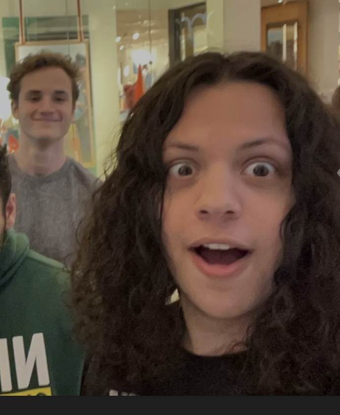

// sound-engineer.portfolio
Crafting immersive audio experiences for film, games, and interactive media.
Sound engineer and designer building precise, narrative-driven audio for film, games, and broadcast. Clean process, reliable output.
About

Nico Barrera
Sound engineer and designer focused on creating immersive audio experiences. Specialized in mixing, sound design, and audio post-production for film, games, and broadcast media.
Passionate about sonic storytelling and pushing the boundaries of what audio can achieve in interactive media.
Featured
Demo Reel 2024
Audio Demos
Selected Work
| № | Project | Type | Year | Link |
|---|---|---|---|---|
| 01 | Film & Documentary | Sound Design | 2024 | Watch → |
| 02 | Interactive & Games | Implementation | 2024 | Watch → |
| 03 | Broadcast & Podcast | Production | 2023 | Watch → |
Contact
Let's build your next sound experience
Ready to work on film, games, podcasts, or events? Reach out and let's talk creative audio direction.